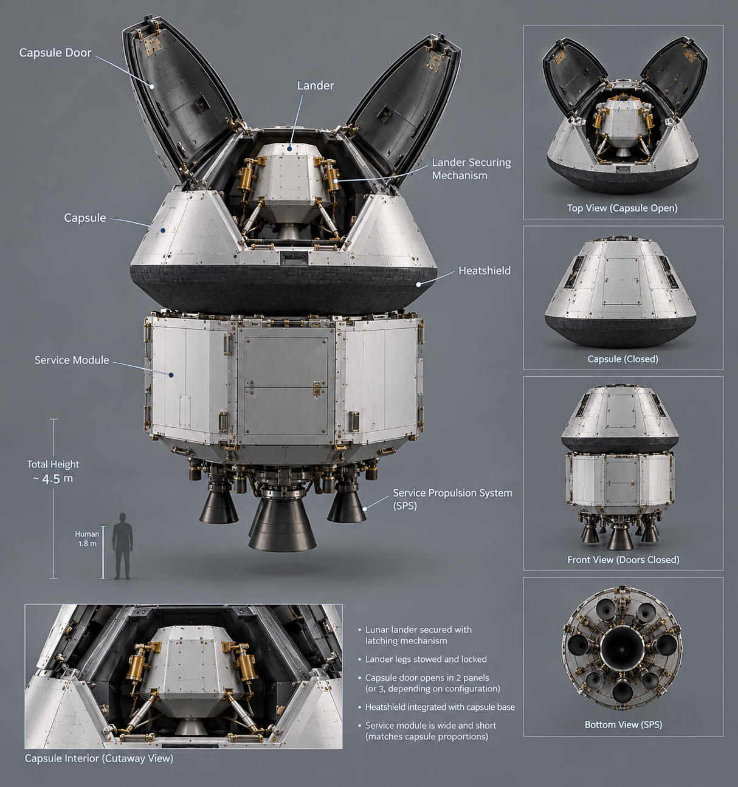

PROGRAMME REGISTER / 01
Concepts into
engineering evidence.
Project directions across flight, space and engineering software. Each entry shows its current stage and a practical next step—so an idea is never mistaken for a finished product.

PORTFOLIO STATUSLIVE REGISTER / EARLY STAGE
01 / PROJECT REGISTER
Work in progression.
These are initial areas of exploration, not claims of completed products. Update the status as work progresses and publish results with their assumptions and limitations.
DIVISION 01 / AIR
Altair Aeronautics
Aircraft, aerodynamics & flight sciences ↗ DIVISION 02 / SPACEAltair Astronautics
Orbital mechanics & mission systems ↗NO MATCHING PROJECTS
Try a different search or discipline.
OWNER'S NOTE / ADDING YOUR WORK
Add projects, reports, CAD & models
Draft an entry with the project builder, place files in the right division folder and commit both to GitHub. The website links to published files; it cannot upload them itself.
HAVE A RELATED CHALLENGE?